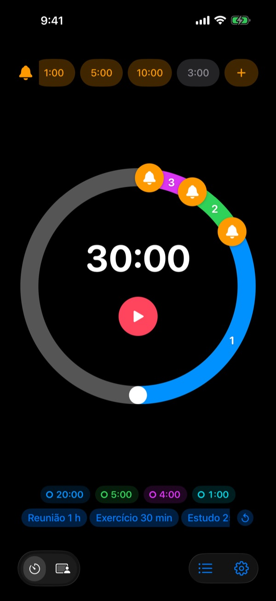
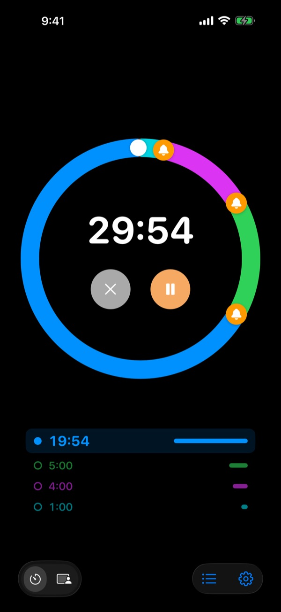
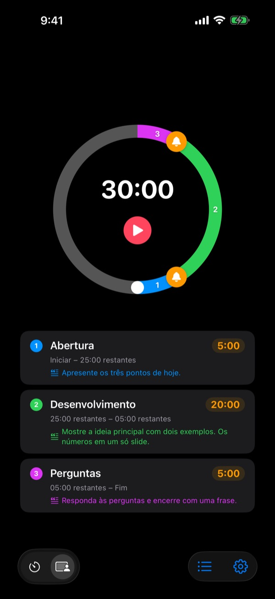
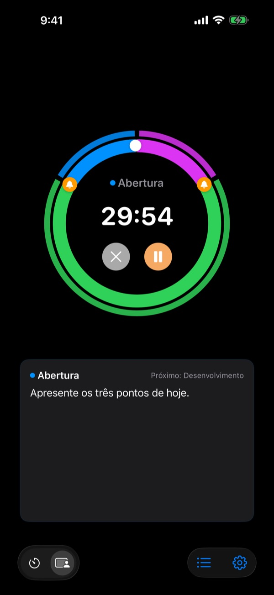

Não depois que acabou,
mas antes
5 minutos antes do fim da palestra, 3 antes de encerrar a reunião. O Rereminder avisa em cada momento que você escolher, e você não precisa ficar olhando o relógio.
Pré-alertas grátis e sem limite. Para iPhone, Apple Watch e Mac.

Experimente aqui mesmo
Escolha a duração e os alertas e toque no botão vermelho. Um minuto passa em um segundo, e cada alerta toca na hora certa.
O timer já tocou quando não dava mais tempo?
Um timer comum só toca no zero. A palestra acaba antes da conclusão, a aula termina sem revisão e a reunião invade a próxima sem decidir nada. Você não precisa de um aviso de que acabou, e sim de um sinal enquanto ainda dá tempo de fechar.
Avisos antes do fim, quantos você quiser
Arraste os sinos do mostrador para 10, 5 ou 1 minuto antes do fim, ou para onde preferir. Não tem limite, e cada alerta pode ter a sua própria mensagem, como "Fechar os slides".
Com a tela apagada, o tempo restante continua na Tela Bloqueada e na Dynamic Island, e o Apple Watch dá um toque no seu pulso.

Divida a apresentação em partes
Abertura 5 minutos, conteúdo 20, perguntas 5. Dê a cada parte um nome e um roteiro. A cada troca de parte, você recebe um alerta com o nome dela, e o tempo de cada uma se cumpre quase sozinho. (Pro)

O que dizer agora, na tela
Durante a apresentação, o roteiro da parte atual e a próxima aparecem em letras grandes. Se passar do zero, ele continua contando para você saber quanto estourou. (Pro)

Comece em três passos
- 1
Defina o tempo
Gire o mostrador ou toque no tempo para digitar. Uma volta são 60 minutos, duas voltas, 120.
- 2
Coloque os alertas
Toque em uma etiqueta como 1:00 ou 5:00 no alto, ou arraste um sino para o mostrador.
- 3
Inicie e esqueça
Bloqueie o iPhone. O iPhone e o Apple Watch avisam em cada momento que você marcou.
Os ajustes mais usados
- Palestra de 20 minutos
- 5 min antes "Ir para a conclusão", 1 min antes "Agradecer"
- Aula de 50 minutos
- 10 min antes "Passar a lição de casa", 3 min antes "Revisar"
- Reunião de 30 minutos
- 5 min antes "Confirmar as decisões"
- Aula de pilates ou ioga
- Modo Sessão, uma parte por sequência (Pro)
- Estudo de 25 minutos
- 5 min antes e depois uma pausa
- Descanso de 3 minutos entre séries
- 30 s antes "Preparar a próxima série"
- Mentoria de uma hora
- 15 e 5 min antes
Salve como modelo o que você repete e abra com um toque (a partir do Memória). Você também pode iniciar ou parar um timer com Atalhos e Siri.
Os pré-alertas são grátis. Pague só se quiser que ele lembre.
Grátis
- Pré-alertas sem limite
- Sua própria mensagem em cada alerta
- Atividade ao Vivo na Tela Bloqueada e na Dynamic Island
- Alertar até eu responder e terminar com alarme completo
- App para Apple Watch e barra de menus do Mac
- Todas as cores de tema
Memória · Pro
- Memória: salve ajustes como modelos e abra com um toque
- Memória: ao reabrir o app, tudo volta como você deixou
- Pro: tudo do Memória mais o Modo Sessão com nomes de partes e roteiros
- Pro: tempo extra, histórico e estatísticas
Em cada plano, escolha assinatura anual ou uma compra única para sempre. Dá para testar o Modo Sessão, o tempo extra e o histórico algumas vezes antes de pagar.
Sem anúncios. E um Passe para sempre abre todos os apps da Leeo.
Perguntas frequentes
Um alerta não tocou.
Quase sempre é permissão ou modo de Foco. Confira a permissão de notificações no app, em Ajustes › Método de notificação. Se você usa um Foco, adicione o Rereminder como app permitido em Ajustes › Foco do iOS. No modo silencioso, só vibra. Se o Rereminder estiver em Ajustes › Notificações › Resumo Agendado, os alertas ficam retidos; tire-o de lá.
Vou perceber o fim no modo silencioso?
Sim. Ative "Terminar com alarme completo" e ele toca alto mesmo no modo silencioso ou com um Foco. Com "Alertar até eu responder", ele insiste até você tocar em Parar ou Adiar na notificação.
Meu Apple Watch não sincroniza.
Abra Ajustes › Meus dispositivos no app; ali aparece o passo que falta. O relógio precisa estar emparelhado com este iPhone, o Rereminder precisa estar instalado no relógio e você precisa abri-lo uma vez no relógio depois de instalar. A partir daí, o timer chega mesmo com o app do relógio fechado.
Meu Mac aparece como desconectado.
"Conectado" quer dizer que o app esteve aberto naquele Mac nos últimos 10 minutos, então um Mac que acabou de acordar aparece alguns minutos depois. Os dois aparelhos precisam da mesma conta do iCloud, com o iCloud Drive ativado. O app para Mac precisa do macOS 26 ou posterior.
Paguei, mas nada foi desbloqueado.
Toque em "Restaurar compras" na tela de planos, usando a mesma Conta Apple com que você pagou. Compras para sempre voltam mesmo depois de apagar o app ou trocar de aparelho.
Meus modelos salvos estão bloqueados.
Eles continuam lá. Sem Memória ou Pro, ficam visíveis mas bloqueados, e voltam a abrir assim que você compra um dos dois.
Como peço reembolso?
Quem cuida dos reembolsos é a Apple. Peça em reportaproblem.apple.com com a Conta Apple usada no pagamento. Se algo estava com defeito, me conte também para que a próxima pessoa não passe pelo mesmo.
Dá para testar sem instalar?
Abra m1zz.github.io/rereminder no iPhone e o timer roda na hora como App Clip. O mostrador e os alertas estão lá. Modelos, Modo Sessão e o app do relógio ficam no app completo.
Em quais aparelhos funciona?
iPhone com iOS 26 ou posterior, Apple Watch com watchOS 11.6 ou posterior e Mac com macOS 26 ou posterior. O iPad ainda não é compatível. O app está em 24 idiomas.
Onde ficam meus dados?
Timers, modelos, nomes de partes, roteiros e histórico ficam no seu aparelho e somem se você apagar o app. O app só envia estatísticas de uso anônimas que ajudam a melhorá-lo. A política de privacidade diz exatamente quais.
Dúvidas ou sugestões? Escreva para leeo@kakao.com. Costumo responder em 2 a 3 dias.